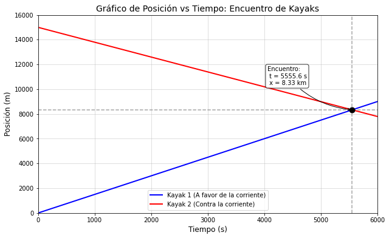

Problemas Ricos en Contexto: Cinemática#
1. Los Submarinos#
Estás escribiendo una historia de acción naval. En tu relato, dos submarinos de la Armada en una misión secreta en el Océano Pacífico deben llegar a un punto de encuentro al mismo tiempo. Ambos zarpan simultáneamente desde posiciones que están a la misma distancia del punto de encuentro. Viajan a distintas velocidades, pero ambos en línea recta. El primer submarino viaja a una velocidad media de 20 km/h durante los primeros 500 km, 40 km/h en los siguientes 500 km, 30 km/h en los terceros 500 km y 50 km/h en los 500 km finales. En la trama, se requiere que el segundo submarino viaje a una velocidad constante. Como autor de la historia, necesitas que la física tenga sentido: ¿cuál debe ser la magnitud de la velocidad constante del segundo submarino ordenado por su capitán?
2. El Río#
Es un hermoso fin de semana de primavera y, junto a cuatro amigos, deciden pasar el día al aire libre en el Cajón del Maipo. Dos de tus amigos solo quieren relajarse, mientras que los otros dos quieren hacer ejercicio. Por tu parte, necesitas un rato de tranquilidad para estudiar. Para dejar a todos contentos, el grupo decide pasar el día en el Río Maipo. Dos personas subirán a un kayak y simplemente se dejarán llevar río abajo por la corriente, que avanza a 1,5 m/s. El segundo par comenzará al mismo tiempo que el primero, pero desde un punto ubicado 15 km río abajo. Ellos remarán río arriba hasta que ambos kayaks se encuentren. Como ya has salido con ellos antes, sabes que remando contra la corriente logran mantener una velocidad media de 1,2 m/s respecto a la orilla. Cuando ambos grupos se encuentren, saldrán a la orilla y tú deberías estar ahí esperándolos con tu furgoneta. Decides ir a ese punto con anticipación para poder estudiar tranquilamente bajo un árbol. ¿A qué distancia del punto de partida del primer kayak debes estacionarte a esperar?
3. Los Corredores#
Es una soleada tarde de domingo, hacen unos agradables 18 °C, y estás caminando por los alrededores del Estadio Monumental en Macul. La vereda está llena de corredores y transeúntes. Notas que se acerca un corredor usando una camiseta con un texto llamativo impreso. Llegas a leer las dos primeras líneas, pero pasa junto a ti antes de que puedas leer la última. Piensas: “Si sigue dando la vuelta al recinto, de seguro lo volveré a ver, pero debería anticipar a qué hora nos cruzaremos de nuevo para estar atento”. Miras tu reloj y son las 15:07. Recuerdas que el perímetro que rodea el estadio y sus canchas de entrenamiento es de aproximadamente 3,5 km. Estimas que tu velocidad al caminar es de unos 5 km/h y la del corredor es de unos 12 km/h. ¿A qué hora deberías estar atento para leer el final de la camiseta?
4. El Auto Solar#
Te has unido al equipo universitario que competirá en la Carrera Solar Atacama. La velocidad media óptima del vehículo depende de la cantidad de sol que incide sobre sus paneles. Tu trabajo es definir la estrategia de carrera programando un script que calcule la velocidad media del auto para un día que presenta distintas condiciones meteorológicas. Para hacer esto, necesitas determinar la ecuación de la velocidad media del día basándote en la velocidad media del auto para cada tramo del viaje. A modo de prueba, imaginas que la carrera de hoy consiste en una cierta distancia bajo un sol radiante, la misma distancia con condiciones de nubosidad parcial, y el doble de esa distancia bajo cielos completamente nublados. Determina la expresión analítica para la velocidad media total en función de las velocidades de cada tramo.
Set de Problemas Equivalentes#
Problema A: Las Llaves Olvidadas Tú y una amiga corren 10 km todos los días, sin importar el clima. Hoy es una gélida mañana de invierno en Peñalolén, con una temperatura de 2 °C. Tu amiga, una verdadera fanática del running, insiste en que es un buen día para salir. Aceptas esta locura con la condición de que ambos comiencen en tu casa y terminen el recorrido en su casa, que cuenta con una buena calefacción, de modo que ninguno tenga que esperar afuera en el frío. Sabes que ella corre a un ritmo muy constante de 3,0 m/s, mientras que tu velocidad media es de unos constantes 4,0 m/s. Tu amiga termina de calentar primero, así que sale con ventaja. El plan es que ella llegue primero a su casa para abrir la puerta antes de que tú llegues. Sin embargo, 5 minutos después de que ella sale, te das cuenta de que dejó caer sus llaves en la entrada de tu casa. Si ella termina su carrera primero, tendrá que quedarse congelándose afuera y no estará nada feliz. Si sales inmediatamente, corriendo a tu ritmo habitual y llevándole sus llaves, ¿a qué distancia de tu casa la alcanzarás?
Problema B: El Buque Factoría y el Iceberg Debido a tus conocimientos técnicos, te han contratado como asistente en un proyecto de investigación que desarrolla sistemas de evasión de accidentes navales en el extremo sur de Chile. Tu equipo está preocupado por los derrames de combustible en el Paso Drake causados por buques factoría que chocan con icebergs. Han estado desarrollando un nuevo radar que puede detectar masas de hielo grandes, pero les preocupa su alcance más bien corto: solo 3,0 km. El director de la investigación te ha recordado que la señal del radar viaja a la velocidad de la luz (300.000 km/s), pero una vez que la señal de rebote llega al buque, el computador de a bordo tarda 5,0 minutos en procesarla. Lamentablemente, los buques son tan masivos que tardan mucho tiempo en maniobrar para desviar su rumbo. Tu trabajo es determinar de cuánto tiempo se dispondrá para virar el barco y evitar la colisión una vez que el sistema detecta (procesa) un iceberg. Una velocidad de navegación típica en invierno en esa zona es de 25 km/h. Asume que el barco se dirige directamente hacia un iceberg que va a la deriva a 8,0 km/h en la misma dirección en que viaja el barco.
Problema C: El Murciélago Cola de Ratón Estás colaborando en un estudio sobre cómo los murciélagos evitan obstáculos. En tu investigación, un murciélago cola de ratón (especie típica chilena) es equipado con un micro-transmisor que envía la velocidad del animal a tus instrumentos en el laboratorio. La señal viaja a la velocidad de la luz (300.000.000 m/s). Sabes que el murciélago detecta obstáculos emitiendo un pulso de sonido hacia adelante (ecolocalización) que viaja a 340 m/s por el aire. El murciélago detecta el obstáculo cuando el pulso de sonido rebota en él y el eco llega de vuelta a sus oídos. Tu tarea es determinar la cantidad máxima de tiempo que tiene un murciélago, después de escuchar el eco de un obstáculo, para cambiar su trayectoria de vuelo y evitar chocar. En el experimento de hoy, tus instrumentos indican que un murciélago vuela en línea recta hacia una muralla a una velocidad constante de 6,0 m/s y emite un pulso de sonido cuando está exactamente a 3,0 m de dicha pared.
Pautas de Corrección: Problemas Ricos en Contexto#
1. Los Submarinos#
Objetivo: Calcular la rapidez constante (\(v_2\)) del segundo submarino para que el tiempo de viaje sea igual al del primero.
El tiempo total del primer submarino es la suma de los tiempos en cada tramo (\(t_i = \frac{d_i}{v_i}\)): $\(t_{\text{total}} = \frac{500}{20} + \frac{500}{40} + \frac{500}{30} + \frac{500}{50}\)\( \)\(t_{\text{total}} = 25 + 12.5 + 16.67 + 10 = 64.17 \text{ h}\)$
La velocidad constante del segundo submarino para recorrer la distancia total (\(d_{\text{total}} = 2000\) km) en el mismo tiempo es: $\(v_2 = \frac{d_{\text{total}}}{t_{\text{total}}} = \frac{2000}{64.17}\)\( **Respuesta:** \)\(v_2 \approx 31.17 \text{ km/h}\)$
2. El Río#
Objetivo: Determinar la posición de encuentro (\(x\)) respecto al punto de partida del primer kayak.
Se definen las ecuaciones de itinerario para ambos kayaks. El kayak 1 se mueve con la corriente y el kayak 2 contra ella desde una distancia \(d_0 = 15000\) m: $\(x_1(t) = 1.5 t\)\( \)\(x_2(t) = 15000 - 1.2 t\)$
Igualando las posiciones para encontrar el tiempo de encuentro: $\(1.5 t = 15000 - 1.2 t \implies 2.7 t = 15000 \implies t \approx 5555.56 \text{ s}\)$
Reemplazando en \(x_1(t)\) para encontrar la distancia: $\(x = 1.5 \cdot 5555.56\)\( **Respuesta:** \)\(x \approx 8333.3 \text{ m} \approx 8.33 \text{ km}\)$
3. Los Corredores#
Objetivo: Determinar la hora exacta del próximo encuentro considerando trayectorias opuestas en un circuito cerrado.
La distancia que deben cubrir juntos para volver a encontrarse es exactamente el perímetro del estadio (\(L = 3.5\) km). Al ir en sentidos opuestos, la velocidad relativa de acercamiento es la suma de sus magnitudes: $\(v_{\text{rel}} = v_{\text{yo}} + v_{\text{corr}} = 5 + 12 = 17 \text{ km/h}\)$
El tiempo que tardarán en volver a cruzarse es: $\(\Delta t = \frac{L}{v_{\text{rel}}} = \frac{3.5}{17} \approx 0.206 \text{ h}\)$
Convirtiendo a minutos: \(0.206 \cdot 60 \approx 12.35\) min (12 minutos y 21 segundos). Sumando este tiempo a las 15:07: Respuesta: El próximo cruce ocurrirá a las 15:19 hrs.
4. El Auto Solar#
Objetivo: Obtener la expresión analítica de la rapidez media total.
La rapidez media es el cociente entre la distancia total y el tiempo total invertido. Las distancias de los tramos son \(d_1 = d\), \(d_2 = d\) y \(d_3 = 2d\), por lo que \(d_{\text{total}} = 4d\).
El tiempo total se expresa en función de las velocidades de cada tramo: $\(t_{\text{total}} = t_1 + t_2 + t_3 = \frac{d}{v_1} + \frac{d}{v_2} + \frac{2d}{v_3}\)$
La rapidez media total es: $\(v_{\text{media}} = \frac{4d}{d \left(\frac{1}{v_1} + \frac{1}{v_2} + \frac{2}{v_3}\right)}\)$
Cancelando la variable \(d\): Respuesta: $\(v_{\text{media}} = \frac{4}{\frac{1}{v_1} + \frac{1}{v_2} + \frac{2}{v_3}}\)$
Set de Problemas Equivalentes#
Problema A: Las Llaves Olvidadas#
Objetivo: Calcular la posición de alcance. La amiga lleva una ventaja temporal de \(\Delta t = 300\) s (5 min). $\(x_{\text{amiga}}(t) = 3.0(t + 300)\)\( \)\(x_{\text{yo}}(t) = 4.0 t\)\( Igualando para el alcance: \)\(3.0 t + 900 = 4.0 t \implies t = 900 \text{ s}\)\( **Respuesta:** \)\(x = 4.0 \cdot 900 = 3600 \text{ m} = 3.6 \text{ km}\)$
Problema B: El Buque Factoría y el Iceberg#
Objetivo: Calcular el tiempo remanente antes del impacto tras procesar la señal. La velocidad relativa de acercamiento (mismo sentido) es \(v_{\text{rel}} = 25 - 8 = 17\) km/h. El tiempo total hasta la colisión si no se hace nada es: $\(t_{\text{colisión}} = \frac{d_0}{v_{\text{rel}}} = \frac{3.0}{17} \approx 0.176 \text{ h} \approx 10.6 \text{ min}\)\( El tiempo de procesamiento consume 5.0 minutos de esa ventana. **Respuesta:** \)\(t_{\text{disponible}} = 10.6 - 5.0 = 5.6 \text{ min}\)$
Problema C: El Murciélago Cola de Ratón#
Objetivo: Calcular el tiempo que le queda al murciélago para virar luego de percibir el eco. Tiempo en que el murciélago recibe el eco (considerando que el pulso y el murciélago se encuentran tras el rebote): $\(t_{\text{eco}} = \frac{2d_0}{v_{\text{sonido}} + v_{\text{murc}}} = \frac{2 \cdot 3.0}{340 + 6.0} = \frac{6.0}{346} \approx 0.0173 \text{ s}\)\( Tiempo total que le tomaría chocar con la pared desde \)d_0\(: \)\(t_{\text{colisión}} = \frac{d_0}{v_{\text{murc}}} = \frac{3.0}{6.0} = 0.5 \text{ s}\)\( **Respuesta:** \)\(t_{\text{disponible}} = t_{\text{colisión}} - t_{\text{eco}} = 0.5 - 0.0173 \approx 0.483 \text{ s}\)$
Problema: El Río (Kayaks al encuentro)#
(Aquí va el enunciado del problema…)
👉 1. Identificar (Clic para expandir)
Extraemos los datos relevantes y definimos nuestro sistema de referencia:
- Origen ($x = 0$): Punto de partida del primer kayak.
- Velocidad del Kayak 1: $v_1 = 1.5$ m/s (se mueve con la corriente, velocidad positiva).
- Posición inicial Kayak 2: $d_0 = 15000$ m.
- Velocidad del Kayak 2: $v_2 = -1.2$ m/s (se mueve contra la corriente, se acerca al origen, velocidad negativa).
👉 2. Plantear (Clic para expandir)
Utilizamos la ecuación de itinerario para movimiento rectilíneo uniforme (MRU): $x(t) = x_0 + v \cdot t$
Para cada kayak: $\(x_1(t) = 1.5 \cdot t\)\( \)\(x_2(t) = 15000 - 1.2 \cdot t\)$
La condición de encuentro es que ambos estén en la misma posición al mismo tiempo: \(x_1(t) = x_2(t)\).
👉 3. Ejecutar (Clic para expandir)
Igualamos las ecuaciones para despejar el tiempo de encuentro ($t$): $$1.5 \cdot t = 15000 - 1.2 \cdot t$$ $$2.7 \cdot t = 15000$$ $$t \approx 5555.56 \text{ s}$$
Reemplazamos este tiempo en la ecuación del primer kayak para hallar la posición: $\(x = 1.5 \cdot 5555.56 \approx 8333.3 \text{ m}\)$
👉 4. Evaluar (Clic para expandir)
El punto de encuentro ocurre aproximadamente a los $8.33$ km del inicio. ¿Tiene sentido? Sí. Como el Kayak 1 va un poco más rápido (1.5 m/s vs 1.2 m/s), recorre una distancia ligeramente mayor que la mitad del camino total ($7.5$ km) antes de encontrarse con el Kayak 2. El signo del tiempo y la posición son positivos, lo cual es coherente con nuestro sistema de referencia.
Show code cell source
import numpy as np
import matplotlib.pyplot as plt
# 1. Definición de parámetros (Los estudiantes pueden modificar esto)
v1 = 1.5 # m/s (Kayak 1)
v2 = -1.2 # m/s (Kayak 2, negativo porque va en sentido contrario)
x0_1 = 0 # m (Posición inicial Kayak 1)
x0_2 = 15000 # m (Posición inicial Kayak 2)
# 2. Arreglo de tiempo (de 0 a 6000 segundos)
t = np.linspace(0, 6000, 200)
# 3. Ecuaciones de itinerario
x1 = x0_1 + v1 * t
x2 = x0_2 + v2 * t
# 4. Cálculo analítico del punto de intersección (para el gráfico)
t_encuentro = (x0_2 - x0_1) / (v1 - v2)
x_encuentro = x0_1 + v1 * t_encuentro
# 5. Configuración del gráfico
plt.figure(figsize=(10, 6))
plt.plot(t, x1, label='Kayak 1 (A favor de la corriente)', color='blue', linewidth=2)
plt.plot(t, x2, label='Kayak 2 (Contra la corriente)', color='red', linewidth=2)
# Marcar el punto de encuentro
plt.scatter(t_encuentro, x_encuentro, color='black', zorder=5, s=80)
plt.axvline(x=t_encuentro, color='gray', linestyle='--', alpha=0.7)
plt.axhline(y=x_encuentro, color='gray', linestyle='--', alpha=0.7)
# Anotación del resultado
plt.annotate(f'Encuentro:\n t = {t_encuentro:.1f} s\n x = {x_encuentro/1000:.2f} km',
xy=(t_encuentro, x_encuentro),
xytext=(t_encuentro - 1500, x_encuentro + 2000),
bbox=dict(boxstyle="round,pad=0.3", fc="white", ec="black", alpha=0.8),
arrowprops=dict(arrowstyle="->", connectionstyle="arc3,rad=.2"))
# Detalles estéticos
plt.title('Gráfico de Posición vs Tiempo: Encuentro de Kayaks', fontsize=14)
plt.xlabel('Tiempo (s)', fontsize=12)
plt.ylabel('Posición (m)', fontsize=12)
plt.legend()
plt.grid(True, alpha=0.5)
plt.xlim(0, 6000)
plt.ylim(0, 16000)
# Mostrar gráfico
plt.show()

Show code cell source
import numpy as np
import matplotlib.pyplot as plt
from ipywidgets import interact, FloatSlider
def grafico_interactivo(v1, magnitud_v2):
# v1 es positiva (a favor de la corriente), v2 es negativa (contra la corriente)
v2 = -magnitud_v2
x0_1 = 0 # Posición inicial Kayak 1 (m)
x0_2 = 15000 # Posición inicial Kayak 2 (m)
# Arreglo de tiempo
t = np.linspace(0, 8000, 200)
# Ecuaciones de itinerario
x1 = x0_1 + v1 * t
x2 = x0_2 + v2 * t
# Cálculo analítico del punto de intersección
# Verificamos que las velocidades no sean iguales para evitar división por cero
if v1 != v2:
t_encuentro = (x0_2 - x0_1) / (v1 - v2)
x_encuentro = x0_1 + v1 * t_encuentro
else:
t_encuentro = -1 # Valor arbitrario fuera de rango si no se encuentran
x_encuentro = -1
# Configuración del gráfico
plt.figure(figsize=(10, 6))
plt.plot(t, x1, label=f'Kayak 1 (v = {v1:.1f} m/s)', color='blue', linewidth=2)
plt.plot(t, x2, label=f'Kayak 2 (v = {v2:.1f} m/s)', color='red', linewidth=2)
# Graficar el punto solo si el encuentro ocurre en un tiempo futuro y dentro del rango
if 0 <= t_encuentro <= 8000:
plt.scatter(t_encuentro, x_encuentro, color='black', zorder=5, s=80)
plt.axvline(x=t_encuentro, color='gray', linestyle='--', alpha=0.7)
plt.axhline(y=x_encuentro, color='gray', linestyle='--', alpha=0.7)
plt.annotate(f'Encuentro:\n t = {t_encuentro:.1f} s\n x = {x_encuentro/1000:.2f} km',
xy=(t_encuentro, x_encuentro),
xytext=(t_encuentro + 300, x_encuentro + 2500),
bbox=dict(boxstyle="round,pad=0.3", fc="white", ec="black", alpha=0.8),
arrowprops=dict(arrowstyle="->", connectionstyle="arc3,rad=.2"))
plt.title('Gráfico Dinámico: Encuentro de Kayaks', fontsize=14)
plt.xlabel('Tiempo (s)', fontsize=12)
plt.ylabel('Posición (m)', fontsize=12)
plt.legend()
plt.grid(True, alpha=0.5)
plt.xlim(0, 8000)
plt.ylim(0, 16000)
plt.show()
# Creación de los deslizadores (Sliders)
interact(grafico_interactivo,
v1=FloatSlider(value=1.5, min=0.5, max=3.0, step=0.1,
description='v Kayak 1 (m/s):',
style={'description_width': 'initial'}),
magnitud_v2=FloatSlider(value=1.2, min=0.5, max=3.0, step=0.1,
description='|v Kayak 2| (m/s):',
style={'description_width': 'initial'}));
[!NOTE] Definición: La permitividad del vacío (\(\varepsilon_0\)) es una constante física que describe cómo un campo eléctrico afecta y es afectado por un medio al vacío.
[!WARNING] Cuidado con la simetría: Al calcular el campo eléctrico en el centro exacto de un anillo de radio \(R\) con densidad de carga uniforme, recuerda que las componentes transversales se anulan. ¡El campo en ese punto es cero!
[!TIP] Para este problema, conviene usar coordenadas cilíndricas en lugar de cartesianas para simplificar la integración.
def procesar_evaluaciones_moodle(lista_archivos):
for estudiante in lista_archivos:
if tiene_archivo_respaldo(estudiante):
- print("Ya terminó")
- break # Este era el error: cortaba el ciclo y se saltaba al siguiente estudiante
+ procesar_respaldo(estudiante)
+ continue # Corrección: procesa el respaldo y continúa con el resto de la lista
evaluar(estudiante)
def procesar_evaluaciones_moodle(lista_archivos):
for estudiante in lista_archivos:
if tiene_archivo_respaldo(estudiante):
- print("Ya terminó")
+ procesar_respaldo(estudiante)
evaluar(estudiante)
Metodología para problemas de Cinemática:
Identificar: Leer el enunciado, extraer variables y definir el sistema de referencia.
Plantear: Escribir las ecuaciones de itinerario (ej. \(x(t) = x_0 + v_0 t + \frac{1}{2}at^2\)).
Ejecutar: Realizar el despeje algebraico sin reemplazar los números hasta el final.
Evaluar: Comprobar si las unidades cuadran y si la magnitud del resultado tiene sentido físico.
El método de instrucción entre pares ha demostrado aumentar significativamente la ganancia conceptual en estudiantes de ingeniería en cursos de física introductoria.[1]
Variable |
Descripción (Alineado a la izq) |
Unidad (Centrado) |
Valor Típico (Der) |
|---|---|---|---|
\(t\) |
Tiempo de encuentro |
s |
\(15.4\) |
\(v\) |
Rapidez media |
m/s |
\(3.0\) |
\(x_f\) |
Posición final |
m |
\(120.0\) |
¿Qué camino tomar para tu Libro Digital?#
Si estás construyendo tu libro digital usando la herramienta Jupyter Book (la más popular para esto), el estándar para crear alertas de colores que funcionen tanto al compilar el libro como en la web es usar la sintaxis MyST (Markedly Structured Text). Se escribe con acentos graves, así:
```{note}
**Definición:** La permitividad del vacío...